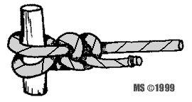
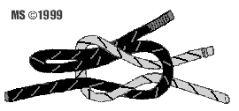

|
|
|
|
|

rodzaje klas wêz³y
zielony |
w tym dziale poznasz czêsto u¿ywane wêz³y bardzo czêsto niemuwi siê o nich na szkoleniach
CUMOWY Wêze³ s³u¿y do cumowania na palu i do pierœcienia. Wêze³ zapewnia mocny chwyt, nie œlizga siê i nie zaciska. Podwójny chwyt pala czy pierœcienia chroni linê od przecierania siê. 
RYBACKI 
Jest dobrym wêz³em do cumowania, mo¿e byæ u¿yty do wi¹zania liny do: kotwicy, wiadra, sondy, ciê¿arka rzutkowego itp.
REFOWY Wêze³ u¿ywany do wi¹zania flag, oraz bander nie maj¹cych chom¹tek i klamer. £atwy do wi¹zania, b³yskawiczny w rozwi¹zywaniu, wystarczy poci¹gn¹æ za wolny koniec liny, aby ca³kowicie siê rozwi¹za³.
WYBLINKA U¿ywany do zawi¹zywania linki na linie lub przedmiocie o wiêkszej œrednicy lub obwodzie. Typowe zastosowanie to wi¹zanie wyblinek na wantach. Wêze³ mocno siê trzyma, po obci¹¿eniu i namokniêciu trudno siê rozwi¹zuje, pracuj¹c na szarpanie przeciera linê - dlatego nie nale¿y go u¿ywaæ do cumowania.
ZWI¥Z WANTOWY S³u¿y do ³¹czenia dwóch lin o ró¿nych œrednicach, wytrzymuje du¿e obci¹¿enie. Wêze³ mo¿na zastosowaæ do awaryjnej naprawy wanty, przy pomocy dodatkowego odcinka stalówki, wi¹¿e siê dwa wêz³y. Je¿eli wanta ma zapas na d³ugoœci, wi¹¿e siê jeden wêze³ ³¹cznikowy. Po wykonaniu wêz³a wantê trzeba wybraæ œci¹gaczem. Ze wzglêdu na z³¹ pracê linstalowych, gdy s¹ zagiête na ma³ych promieniach, wêz³a nie nale¿y stosowaæ na sta³e. Wêze³ nadaje siê przede wszystkim do stosowania na linach w³ókiennych. |